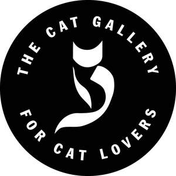

Trade Mark Journal No.2025/050 12 December 2025
UK00004267528 22 September 2025 (16,35)

- Class 16
- Printed matter; Printed paper signs; Printed promotional material; Printed paper labels; Printed packaging materials of paper; Printed pamphlets; Printed visuals; Printed vouchers; Printed information sheets; Information booklets; Leaflets; Printed leaflets; Printed informational cards; Printed flyers; Cardboard boxes; Paper boxes; Gift boxes; Cardboard gift boxes; Packaging boxes of cardboard; Collapsible cardboard boxes; Packaging boxes of paper; Packaging boxes of card; Paper gift boxes; Stickers; Adhesive stickers; Adhesive printed labels; Paper bags; Gift bags; Carrier bags; Plastic bags for packing.
- Class 35
- Retail services and online retail services in relation to magnets, fridge magnets, refrigerator magnets, decorative magnets, ornamental magnets, keyrings, decorative keyrings, key charms, key tags, decorative brooches, jewellery pins, coasters, plastic coasters, porcelain coasters, leather coasters, coasters, not of paper or textile, mugs, porcelain mugs, coffee mugs, travel mugs, tumblers, plastic cups, drinkware, works of art made of porcelain, ceramic, earthenware, stone, crystal, or glass, figurines made of porcelain, ceramic, earthenware, stone, crystal, or glass, ceramic ornaments, statuettes of porcelain, earthenware, stone, crystal, or glass, statuettes of gemstones, China statuettes, glass ornaments, porcelain ornaments, crystal ornaments, stone ornaments, China ornaments, ornaments made of gemstones, ceramic figurines, porcelain figurines, crystal figurines, glass figurines, stone figurines, China figurines, figurines made of gemstones, figurines made of decorative glass, hand cut crystal glassware, figurines of resin, statuettes of resin, ornamental figurines of resin, sculptures made of resin, cold cast resin figurines, figurines of wood, wax, plaster or plastic, model figures made of synthetic resin, statuettes of wood, wax, plaster or plastic, ornaments of wood, wax, plaster or plastic display shelves, stickers, gift bags, cat food, animal food, cat treats, litter for cats, pet foods in the form of chews, cat toys, toys for pets, stuffed toys, fluffy toys, plush toys, wind-up toys, plastic toys, toys for domestic pets, cat baskets, cat beds, pet furniture, cat collars, catnip, scratching posts for cats, cat scratching mats, pet feeding bowls, jewellery, necklaces, brooches, pendants, bracelets, trinkets, lockets, jewellery charms, rings, earrings, watches, body costume jewellery, hair clips, hair slides, hair elastics, hair scrunchies, claw clips, hair combs, jewellery boxes, jewellery cases, bags, rucksacks, backpacks, duffle bags, handbags, wash bags, tote bags, canvas bags, makeup bags, glasses cases, eyewear cases, umbrellas, nail files, key rings, hand cream, scalp massagers, pouches, drawstring pouches, cleaning cloth, napkins, table cloths, table mats, lip balm, back scratcher, itch scratcher, scarves, neck scarves, socks, slippers, hats, gloves, t-shirts, hoodies, ponchos, tea towels, tea cloths, neck pillows, cushion covers, aprons, notebooks, stationery, pens, pen holders, erasers, candles, clocks, greeting cards, birthday cards, occasion cards, door mats, chopsticks, origami, vases, puzzles, jigsaws, ice cube moulds, ice cube trays, kitchen timer, measuring spoons, tins, storage tins, cookie jars, cake tins, baking tins, plant pots, flower pots, bookmarks, books, non-fiction books, books for children, fictional books, colouring books, dreamcatchers, salt and pepper shakers, spatula, spoons, lamps, teabag holders, bed coverings, bed sheets, duvet covers, mirrors, phone holders.
PANDACAT LIMITED
Representative: Stephens Scown LLP